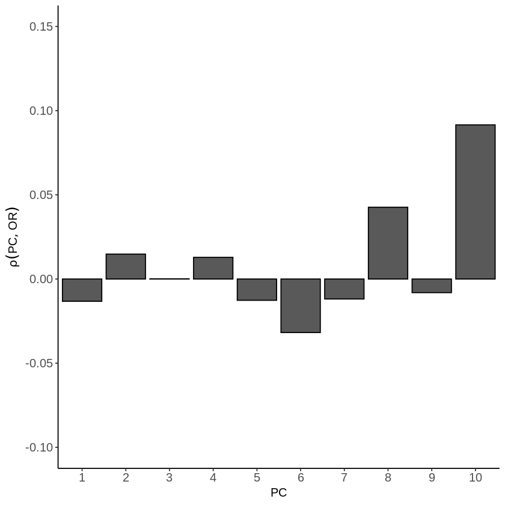
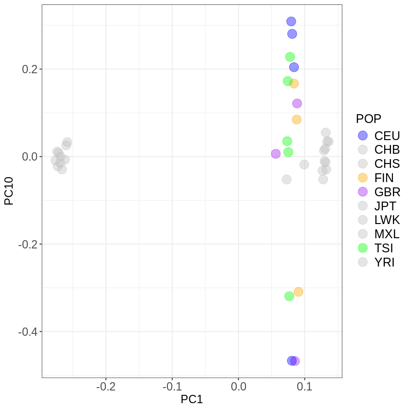

plink --bfile Results/GWAS4/1kG_MDS6 --pca 10 var-wts --out Results/GWAS4/PCA_1kg --silentResidual population stratification in GWAS
Important notes for this notebook
Learning outcomes
- Identify potential population stratification in our GWAS output.
How to make this notebook work
- In this notebook, we will use both
Randbash command lineprogramming languages. Remember to change the kernel whenever you transition from one language to the other (Kernel --> Change Kernel) indicated by the languages’ images. We will first runBashcommands.
 Choose the Bash kernel
Choose the Bash kernel
As we have discussed, it is important to remove population structure, as residual population stratification, as shown by [@sohail2019polygenic], can be detected in published GWAS. This can lead to biased effect size estimates, impacting polygenic risk scores (PRS) and other downstream analyses.
Correlation between PC loadings and effect sizes
We followed a similar approach from [@sohail2019polygenic] to examine GWAS stratification along different PCA axes of population structure. We began by performing a PCA on the genotype data from the 1000 Genomes Project used in the previous notebook. Then, we computed the correlation between the first 10 PCA loadings and the effect size estimates from the GWAS conducted on the Hapmap data. We visualized these PC-specific correlations to explore patterns of stratification along different axes of genetic variation. Additionally, it would be very useful to consider allele frequency differences across different populations when analyzing such stratification.
We use PLINK to get the PC loadings using the --pca var-wts as follows:
 Switch to the R kernel.
Switch to the R kernel.
Now we will plot the correlation between the loadings and the effect sizes for both GWAS results from GWAS5.
A. Binary trait --assoc test
library(ggplot2)
# load the data
results_as <- read.table("Results/GWAS5/assoc_results.assoc", head=TRUE)
data <- read.table(file="Results/GWAS4/PCA_1kg.eigenvec.var",header=FALSE)
colnames(data) <- c("CHROM", "ID", "a1", "a2",
paste0("PC", 1:10)) # PC1 to PC10
# merge data
merged_tab <- merge(results_as, data, by=2)
# compute correlations
correlations <- apply(merged_tab[, 14:23], 2, function(x) cor(merged_tab$OR, x, method="pearson", use="complete.obs"))
correlations
dataCor <- data.frame(
pc = 1:10,
corr = correlations)
ggplot(as.data.frame(dataCor), aes(pc, corr)) +
ylab(expression(rho(PC, OR))) +
geom_bar(stat='identity', position='dodge', col='black')+
xlab('PC') +
ylim(c(-0.1,0.15)) +
scale_x_continuous(breaks=seq(1,10,1), expand=c(0,0.1))+
theme(panel.grid.minor=element_blank(), panel.background = element_blank(),
axis.line = element_line(), axis.text= element_text(size=12),
axis.title= element_text(size=12))- PC1
- -0.0132296406618313
- PC2
- 0.0148094129747471
- PC3
- 0.000108710904731628
- PC4
- 0.0128764323145316
- PC5
- -0.0126458445839562
- PC6
- -0.0318036207335605
- PC7
- -0.0118702516316677
- PC8
- 0.0426472424393875
- PC9
- -0.00809390306591933
- PC10
- 0.0915926823759537

#eigen <- read.table(file="Results/GWAS4/PCA_1kg.eigenvec", header=F)
#colnames(eigen) <- c("FID", "IID", paste0("PC", 1:10))
pop <- read.table(file="Results/GWAS4/popfile.txt",header=TRUE)
df <- merge(eigen,pop,by=c("FID","IID"))
sex <- read.table("./Data/EUR.cov", header=T)
# Metapopulation information for the population in the 1000GP dataset
superpop <- c(
"JPT" = "ASN",
"ASW" = "AFR",
"CEU" = "EUR",
"CHB" = "ASN",
"CHD" = "ASN",
"YRI" = "AFR",
"LWK" = "AFR",
"TSI" = "EUR",
"MXL" = "AMR",
"GBR" = "EUR",
"FIN" = "EUR",
"CHS" = "ASN",
"PUR" = "AMR")
# add metapopulation and assign cols
df$SUPERPOP <- superpop[df$POP]
eur_col <- c("CEU" = "blue", "TSI" = "green", "GBR" = "purple", "FIN" = "orange")
all_cols <- setNames(ifelse(superpop == "EUR", eur_col[names(superpop)], "grey"), names(superpop))
df$color <- all_cols[df$POP]
ggplot(df, aes(PC1, PC10,color=POP)) +
geom_point(size=5, alpha=.4) +
theme_bw() +
scale_color_manual(values = all_cols) +
theme(axis.title = element_text(size = 14), legend.text = element_text(size = 15),
axis.text = element_text(size = 14), legend.title=element_text(size=15))

Copyright
CC-BY-SA 4.0 license